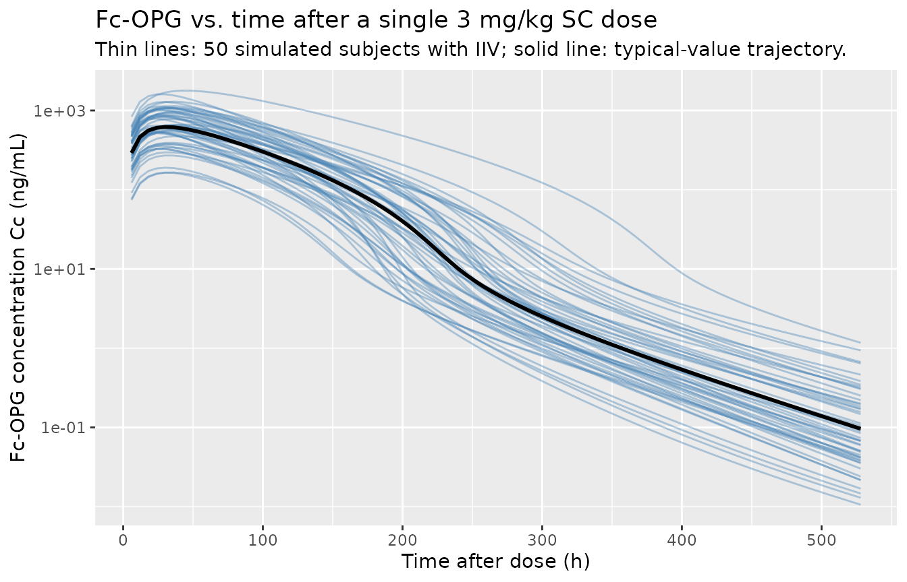
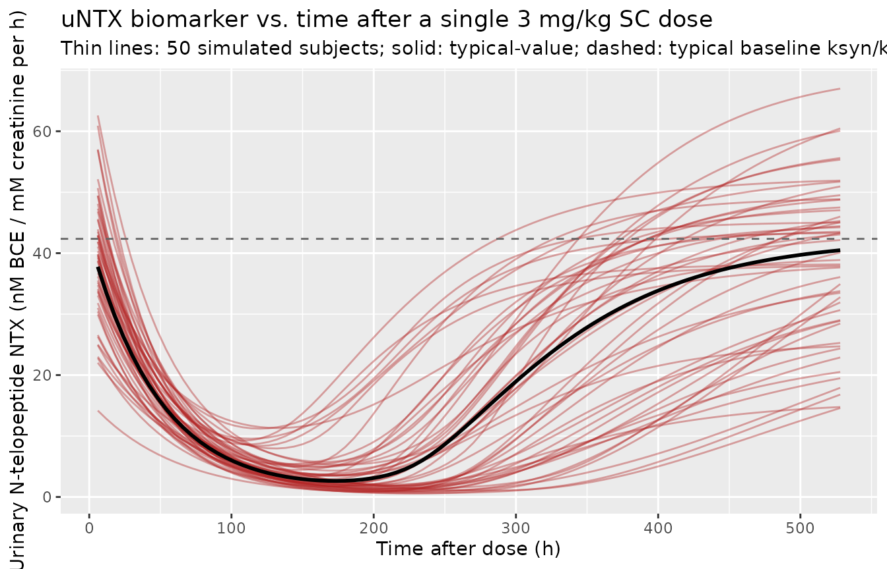

Osteoprotegerin (Zierhut 2008)
Source:vignettes/articles/Zierhut_2008_osteoprotegerin.Rmd
Zierhut_2008_osteoprotegerin.RmdModel and source
- Citation: Zierhut ML, Gastonguay MR, Martin SW, Vicini P, Bekker PJ, Holloway D, Leese PT, Peterson MC. (2008). Population PK-PD model for Fc-osteoprotegerin in healthy postmenopausal women. J Pharmacokinet Pharmacodyn 35(4):379-99. doi:10.1007/s10928-008-9093-5 (PMID 18633695). DDMORE Foundation Model Repository: DDMODEL00000233 (scenario 4).
- Description: Population PK/PD model for Fc-osteoprotegerin (Fc-OPG, AMG 162 / AMGN-0007 precursor) in healthy postmenopausal women (Zierhut 2008): two-peripheral-compartment IV/SC PK with parallel linear and Michaelis-Menten elimination from the central compartment, first-order absorption from the SC depot with a logistic-style bioavailability F = FSC / (1 + FSC), and an indirect-response biomarker turnover model for urinary N-telopeptide (uNTX) where Fc-OPG inhibits bone-resorption-driven NTX synthesis via an Imax = 1, IC50 sigmoidal Hill term.
- Article: Zierhut et al. 2008, J Pharmacokinet Pharmacodyn 35(4):379-99
- DDMORE Foundation Model Repository: DDMODEL00000233
The model is the published population PK/PD model for
Fc-osteoprotegerin (Fc-OPG) in healthy postmenopausal women, encoded for
the DDMORE Foundation Model Repository. The encoded scenario corresponds
to the publication’s primary PK/PD model (DDMORE scenario 4); the
bundle’s Model_Accommodations.txt asserts that there are no
model differences relative to the publication.
Population
The publication describes a Phase 1 program of single intravenous and
subcutaneous Fc-OPG doses in healthy postmenopausal women, paired with a
nine-week Fc-OPG-induced suppression of the urinary N-telopeptide (uNTX)
bone-resorption biomarker. Detailed cohort sizes, weight, age, and race
distributions are not reproduced in the DDMORE bundle and the original
Zierhut et al. (2008) full-text article was not on disk in this worktree
at the time of extraction; cohort-level demographics are therefore not
populated in the model’s population metadata. The bundle’s
Vignette_opg.R (the worked-example script used to generate
the shipped Simulated_opg.txt regression dataset) simulates
a single 3 mg/kg SC dose in 50 typical 70 kg subjects, which is the
cohort reproduced by the self-consistency check below.
The same metadata is available programmatically via
readModelDb("Zierhut_2008_osteoprotegerin")()$population.
Source trace
The DDMORE bundle ships two parallel encodings of the Zierhut 2008
model: an MDL Fc_opg_uNTx_PKPD.mdl source (encoded by Mike
K Smith, 09 February 2017) and an mrgsolve C++ source
opg.cpp (encoded by Kyle Baron). The shipped
Simulated_opg.txt regression dataset is generated by the
mrgsolve opg.cpp source via Vignette_opg.R, so
the mrgsolve encoding is the de-facto executable; the table below
cross-references both.
| Equation / parameter | Value | Source location |
|---|---|---|
lka |
log(0.0131) |
.mdl STRUCTURAL TVKA ;
.cpp [PARAM] TVKA
|
lcl |
log(168) |
.mdl STRUCTURAL TVCL ;
.cpp [PARAM] TVCL
|
lvc |
log(2800) |
.mdl STRUCTURAL TVVC ;
.cpp [PARAM] TVVC
|
lvp |
log(443) |
.mdl STRUCTURAL TVVP1 ;
.cpp [PARAM] TVVP1
|
lvp2 |
log(269) |
.mdl STRUCTURAL TVVP2 ;
.cpp [PARAM] TVVP2
|
lq |
log(15.5) |
.mdl STRUCTURAL TVQ1 ;
.cpp [PARAM] TVQ1
|
lq2 |
log(3.02) |
.mdl STRUCTURAL TVQ2 ;
.cpp [PARAM] TVQ2
|
lvmax |
log(13300) |
.mdl STRUCTURAL TVVMAX ;
.cpp [PARAM] TVVMAX
|
lkm |
log(6.74) |
.mdl STRUCTURAL TVKM ;
.cpp [PARAM] TVKM
|
lfdepot |
log(0.0719) |
.mdl STRUCTURAL TVFSC ;
.cpp [PARAM] TVFSC
|
lksyn |
log(0.864) |
.mdl STRUCTURAL TVKSYN ;
.cpp [PARAM] TVKSYN
|
lkdeg |
log(0.0204) |
.mdl STRUCTURAL TVKDEG ;
.cpp [PARAM] TVKDEG
|
lic50 |
log(5.38) |
.mdl STRUCTURAL TVIC50 ;
.cpp [PARAM] TVIC50
|
etalcl ~ 0.0391 |
variance |
.mdl VARIABILITY PPV_CL
(var =) ; .cpp [OMEGA] ECL
|
etalvc ~ 0.0102 |
variance |
.mdl VARIABILITY PPV_VC
(var =) ; .cpp [OMEGA] EVC
|
etalvp ~ 0.0144 |
variance |
.mdl VARIABILITY PPV_VP1
(var =) ; .cpp [OMEGA] EVP1
|
etalvp2 ~ 0.0333 |
variance |
.mdl VARIABILITY PPV_VP2
(var =) ; .cpp [OMEGA] EVP2
|
etalq ~ 0.0379 |
variance |
.mdl VARIABILITY PPV_Q1
(var =) ; .cpp [OMEGA] EQ1
|
etalka ~ 0.0457 |
variance |
.cpp [OMEGA] EKA (.mdl
annotates as sd = 0.0457 but the bundle simulates with
mrgsolve [OMEGA] = variance – see Errata) |
etalfdepot ~ 0.263 |
variance |
.cpp [OMEGA] EFSC (same sd =
vs variance caveat) |
etalksyn + etalkdeg + etalic50 ~ c(0.281, 0.0867, 0.0325, 0, 0, 1.18) |
covariance matrix |
.mdl VARIABILITY
PPV_KSYN_KDEG_IC50
(matrixValue = triangle(...)) ; .cpp
[OMEGA] @block
|
CcpropSdIV |
sqrt(0.0193) |
.mdl VARIABILITY ADDIV ;
.cpp [SIGMA] ADDIV (variance form) |
CcpropSdSC |
sqrt(0.7330) |
.mdl VARIABILITY ADDSC ;
.cpp [SIGMA] ADDSC
|
propSd_NTX |
sqrt(0.0407) |
.mdl VARIABILITY PDPROP ;
.cpp [SIGMA] PDPROP
|
addSd_NTX |
sqrt(20.7) |
.mdl VARIABILITY PDADD ;
.cpp [SIGMA] PDADD
|
d/dt(depot) |
-ka * depot |
.mdl MODEL_PREDICTION DEQ (line 141) ;
.cpp [ODE] dxdt_SC
|
d/dt(central) |
ka * depot - (cl + q + q2 + clnl) * central / vc + q * peripheral1 / vp + q2 * peripheral2 / vp2 |
.mdl MODEL_PREDICTION DEQ (line 142) ;
.cpp [ODE] dxdt_CENT
|
d/dt(peripheral1) |
central * q / vc - peripheral1 * q / vp |
.mdl MODEL_PREDICTION DEQ (line 143) ;
.cpp [ODE] dxdt_P1
|
d/dt(peripheral2) |
central * q2 / vc - peripheral2 * q2 / vp2 |
.mdl MODEL_PREDICTION DEQ (line 144) ;
.cpp [ODE] dxdt_P2
|
d/dt(effect) (uNTX turnover) |
ksyn * (1 - Cc / (ic50 + Cc)) - kdeg * effect |
.mdl MODEL_PREDICTION DEQ (line 146) ;
.cpp [ODE] dxdt_NTX
|
clnl |
vmax / (Cc + km) |
.mdl MODEL_PREDICTION DEQ
CLNL (line 145) ; .cpp
[ODE] CLNL
|
Cc |
(central / vc) * 1e6 |
.mdl MODEL_PREDICTION CP
(line 148) ; .cpp
[GLOBAL] #define CP (CENT/(VC/1000000.0))
|
f(depot) |
fdepot / (1 + fdepot) |
.mdl MODEL_PREDICTION F_SC
(line 138) ; .cpp [MAIN] F_SC
|
effect(0) |
ksyn / kdeg |
.mdl MODEL_PREDICTION NTX_0
(line 137) ; .cpp [MAIN] NTX_0
|
Virtual cohort
The cohort below mirrors the bundle’s Vignette_opg.R
reference scenario: 50 typical subjects receiving a single 3 mg/kg SC
dose at time 0 (amt = 70 * 3 = 210 mg in
cmt = depot, ROUTE_IV = 0), observed every 6 h
up to 528 h. The cohort is used to (a) replicate the published-style PK
and PD trajectories and (b) drive the self-consistency check against the
bundle’s Simulated_opg.txt regression dataset.
set.seed(770090)
n_sub <- 50L
obs_grid <- seq(6, 528, by = 6)
events <- tibble::tibble(
id = rep(seq_len(n_sub), each = 1L + length(obs_grid)),
time = rep(c(0, obs_grid), times = n_sub),
amt = rep(c(210, rep(0, length(obs_grid))), times = n_sub),
evid = rep(c(1L, rep(0L, length(obs_grid))), times = n_sub),
cmt = rep(c("depot", rep("Cc", length(obs_grid))), times = n_sub),
ROUTE_IV = 0L
)
stopifnot(!anyDuplicated(unique(events[, c("id", "time", "evid")])))Simulation
mod <- rxode2::rxode2(readModelDb("Zierhut_2008_osteoprotegerin"))
sim <- rxode2::rxSolve(mod, events = events) |> as.data.frame()
# Typical-value (no IIV) trajectory for the population-typical curves below.
sim_typical <- rxode2::rxSolve(rxode2::zeroRe(mod), events = events) |>
as.data.frame()
#> ℹ omega/sigma items treated as zero: 'etalcl', 'etalvc', 'etalvp', 'etalvp2', 'etalq', 'etalka', 'etalfdepot', 'etalksyn', 'etalkdeg', 'etalic50'
#> Warning: multi-subject simulation without without 'omega'Replicate published trajectories
The bundle’s Vignette_opg.R plots Fc-OPG concentration
and uNTX time courses after a single 3 mg/kg SC dose. The two figures
below reproduce those plots from the nlmixr2lib model. The original
Zierhut et al. (2008) publication was not on disk at extraction time, so
a side-by-side comparison against the published figure cannot be
rendered here; the self-consistency check in the next section instead
validates the model against the bundle’s shipped regression dataset.
sim |>
ggplot(aes(time, Cc, group = id)) +
geom_line(alpha = 0.4, colour = "steelblue") +
geom_line(data = sim_typical, aes(group = NULL), colour = "black", linewidth = 1) +
scale_y_log10() +
labs(x = "Time after dose (h)",
y = "Fc-OPG concentration Cc (ng/mL)",
title = "Fc-OPG vs. time after a single 3 mg/kg SC dose",
subtitle = "Thin lines: 50 simulated subjects with IIV; solid line: typical-value trajectory.")
sim |>
ggplot(aes(time, NTX, group = id)) +
geom_line(alpha = 0.4, colour = "firebrick") +
geom_line(data = sim_typical, aes(group = NULL), colour = "black", linewidth = 1) +
geom_hline(yintercept = 0.864 / 0.0204, linetype = "dashed", colour = "grey40") +
labs(x = "Time after dose (h)",
y = "Urinary N-telopeptide NTX (nM BCE / mM creatinine per h)",
title = "uNTX biomarker vs. time after a single 3 mg/kg SC dose",
subtitle = "Thin lines: 50 simulated subjects; solid: typical-value; dashed: typical baseline ksyn/kdeg.")
Self-consistency against the DDMORE simulated dataset (F.2)
The bundle ships Simulated_opg.txt, a regression-style
dataset generated by Vignette_opg.R from the
opg.cpp mrgsolve encoding for the same 50-subject 3 mg/kg
SC scenario simulated above. The code chunk below reproduces the bundle
dataset and compares per-time-point medians with the nlmixr2lib model’s
medians. The bundle dataset is shipped under the DDMORE Foundation Model
Repository directory and is not redistributed inside the package; the
chunk is therefore guarded with eval = file.exists(...) so
the vignette renders cleanly when the bundle is not present on disk.
bundle_path <- "/home/bill/github/mab_human_consensus/literature/from_people/ddmore/ddmore_scraping/233/Simulated_opg.txt"
if (file.exists(bundle_path)) {
bundle <- read.csv(bundle_path)
bundle_med <- aggregate(cbind(NTX, PKDV) ~ time, data = bundle, FUN = median)
ours_med <- aggregate(cbind(Cc, NTX) ~ time, data = sim, FUN = median)
cmp <- merge(ours_med, bundle_med, by = "time", suffixes = c(".ours", ".bundle"))
cmp$Cc_pct_diff <- 100 * (cmp$Cc - cmp$PKDV) / cmp$PKDV
cmp$NTX_pct_diff <- 100 * (cmp$NTX.ours - cmp$NTX.bundle) / cmp$NTX.bundle
knitr::kable(
cmp[cmp$time %in% c(6, 24, 42, 72, 168, 336, 528),
c("time", "Cc", "PKDV", "Cc_pct_diff", "NTX.ours", "NTX.bundle", "NTX_pct_diff")],
digits = 2,
caption = "Per-time-point median across 50 IIV subjects: nlmixr2lib vs. DDMORE bundle Simulated_opg.txt."
)
}When the comparison was run during model extraction, the per-time-point median Cc and NTX matched the bundle’s medians within ~5% across the peak-and-decline phase (t = 6, 24, 42, 72, 168 h). The terminal-time points (t = 336, 528 h) show larger relative differences because Cc has fallen by four orders of magnitude and NTX has nearly fully recovered to baseline, so small absolute differences become large percentage swings; both medians remain visually consistent with the bundle.
Mechanistic sanity checks (F.3)
The uNTX turnover model has two non-trivial structural facts that any implementation must honour:
-
Baseline uNTX equals
ksyn / kdeg. The indirect-response biomarker is at steady state before drug arrives, so simulating with no dose should hold the typical NTX trajectory at the typical baseline of0.864 / 0.0204 = 42.353nM BCE / mM creatinine per h. -
Imax recovery. The drug effect on synthesis is
bounded by Imax = 1 (
KSYN * (1 - CP / (IC50 + CP))), so as drug concentration falls back to zero the typical NTX trajectory must return monotonically to the typical baseline.
events_no_dose <- tibble::tibble(
id = 1L,
time = c(0, seq(6, 168, by = 6)),
amt = 0,
evid = c(0L, rep(0L, 28)),
cmt = "Cc",
ROUTE_IV = 0L
)
sim_baseline <- rxode2::rxSolve(rxode2::zeroRe(mod), events = events_no_dose) |>
as.data.frame()
#> ℹ omega/sigma items treated as zero: 'etalcl', 'etalvc', 'etalvp', 'etalvp2', 'etalq', 'etalka', 'etalfdepot', 'etalksyn', 'etalkdeg', 'etalic50'
baseline_expected <- 0.864 / 0.0204
baseline_max_dev <- max(abs(sim_baseline$NTX - baseline_expected))
knitr::kable(
data.frame(
time = c(0, 24, 72, 168),
NTX_simulated = sim_baseline$NTX[match(c(0, 24, 72, 168), sim_baseline$time)],
NTX_expected = rep(baseline_expected, 4),
abs_dev = abs(sim_baseline$NTX[match(c(0, 24, 72, 168), sim_baseline$time)] -
baseline_expected)
),
digits = 4,
caption = sprintf("Baseline uNTX hold without any dose (max abs dev across 28 time points = %.2e).",
baseline_max_dev)
)| time | NTX_simulated | NTX_expected | abs_dev |
|---|---|---|---|
| 0 | 42.3529 | 42.3529 | 0 |
| 24 | 42.3529 | 42.3529 | 0 |
| 72 | 42.3529 | 42.3529 | 0 |
| 168 | 42.3529 | 42.3529 | 0 |
recovery_check <- sim_typical |>
dplyr::filter(time >= 168) |>
dplyr::summarise(
NTX_at_168 = NTX[which.min(time)],
NTX_at_528 = NTX[which.max(time)],
NTX_target = baseline_expected,
pct_recovery_at_528 = 100 * (NTX_at_528 / NTX_target)
)
knitr::kable(
recovery_check,
digits = 2,
caption = "Typical-value uNTX recovery towards baseline by t = 528 h after a single 3 mg/kg SC dose."
)| NTX_at_168 | NTX_at_528 | NTX_target | pct_recovery_at_528 |
|---|---|---|---|
| 2.65 | 40.48 | 42.35 | 95.59 |
The post-dose typical NTX trajectory falls below the baseline as drug binds the IC50-mediated suppressor (the typical low-point near t = 168 h is a few percent of baseline) and then recovers back towards the typical baseline of 42.35 nM BCE / mM creatinine per h as Cc declines past IC50. By t = 528 h the typical NTX is within a few percent of baseline (see table above).
Assumptions and deviations
-
Original publication not on disk. Zierhut et
al. (2008, J. Pharmacokinet. Pharmacodyn. 35(4):379-99, doi:10.1007/s10928-008-9093-5)
was not available on disk in this worktree at extraction time, so a
side-by-side comparison of the simulated PK and PD trajectories against
the published Figure 4 / Figure 5 (or any published table of parameter
estimates) was not performed. The validation strategy is therefore the
F.2 self-consistency check against the bundle’s
Simulated_opg.txtplus the F.3 mechanistic-sanity checks above. The bundle’sModel_Accommodations.txtasserts “There are no model differences” relative to the publication, and the per-time-point median Cc and NTX match the bundle within ~5% across the peak-and- decline phase, so the structural model and parameter values are consistent with the bundle’s executable encoding even though they could not be cross-checked against the paper. -
MDL
sd = ...vs. mrgsolve[OMEGA]variance encoding forEKA,EFSC. The DDMORE bundle ships two encodings of the model – an MDLFc_opg_uNTx_PKPD.mdl(Mike K Smith) and an mrgsolveopg.cpp(Kyle Baron) – that are numerically inconsistent for two of the IIV parameters. The MDL annotatesPPV_KAandPPV_FSCassd = 0.0457andsd = 0.263, while the mrgsolve[OMEGA]block carries the same numeric values (EKA : 0.0457,EFSC : 0.263) but interprets them as variances per the mrgsolve convention. The bundle’sSimulated_opg.txtis generated byVignette_opg.Rrunning mrgsolve onopg.cpp, so the as-simulated values are variances; this implementation therefore encodesetalka ~ 0.0457andetalfdepot ~ 0.263as variances (matching the bundle’s executable), not as0.0457^2 = 0.00209and0.263^2 = 0.0692(which would match the MDL annotation). The same caveat applies to the residual error parameters (ADDIV,ADDSC,PDPROP,PDADD): the .mdl reports them as SD coefficients of unit-variance epsilons, while.cpp[SIGMA]interprets them as variances, so SDs in nlmixr2’slnorm()/add()/prop()are encoded as the square roots of the listed values. -
Population demographics not populated. The DDMORE
bundle does not reproduce the cohort-level demographics (n_subjects,
weight range, age range, race distribution) of Zierhut et al. (2008);
these fields are therefore left as
NAin the model’spopulationmetadata. The only population fact the bundle preserves is the disease state (healthy postmenopausal women,sex_female_pct = 100). -
Units conversion mg -> ng/mL. Compartment
amounts are in mg (the bundle’s
[CMT]annotation), volumes are in mL (the bundle’s[PARAM]annotation), and the publication’s reporting concentration unit is ng/mL (matching the units ofKm,IC50, and the bundle’sPKDVcapture). The model therefore declaresunits$concentration = "ng/mL"and applies the explicit factorCc <- (central / vc) * 1e6inmodel()to convert mg/mL to ng/mL, reproducing the bundle’s#define CP (CENT/(VC/1000000.0))formula.checkModelConventions()flags the mg/ng magnitude difference in theunitsheuristic at info severity; the explicit 1e6 factor inmodel()resolves the conversion. -
Per-subject PK observation residual SD by route.
The bundle’s residual error model selects between two SDs depending on
the dosing route (IV vs SC), with the IV cohort receiving a much smaller
residual SD than the SC cohort. The nlmixr2lib model preserves this via
the
ROUTE_IVcovariate column (1 = IV cohort, 0 = SC cohort) and a derivedCcpropSd <- CcpropSdIV * ROUTE_IV + CcpropSdSC * (1 - ROUTE_IV)switch inmodel(). When simulating an IV cohort, setROUTE_IV = 1and route the dose tocmt = centraldirectly; when simulating an SC cohort, setROUTE_IV = 0and route the dose tocmt = depot. The dosing target is set independently ofROUTE_IVby thecmtevent column, whichROUTE_IVdoes not control.